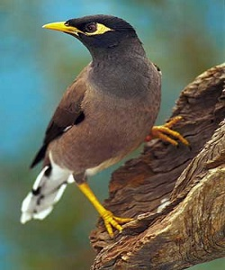
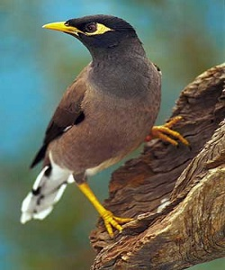

سلام و خسته نباشید . امروز می خواهیم در مورد پرنده های زینتی صحبت کنیم
 

مدت هاست که انسان ها برای سرگرمی خود و اعضای خانواده پرنده های زینتی مختلفی را پرورش می دهند. بسیاری از پرندگان زینتی می توانند به صاحب خود وابسته شوند و با او انس بگیرند. برخی از پرنده های زینتی علاوه بر داشتن ظاهر زیبا و با مزه، استعداد های مختلف مثل آواز خوانی، سخنگویی و تقلید صدا دارند که محبوبیت آنها را در بین انسانها دوچندان نموده است.
این پرنده ها طوطی های کوچکی هستند که ارزش توجه دارند. برای پرورش آنها نیازی به قفس های بزرگ نمی باشد. طوطی برزیلی به طور معمول چهار تا شش تخم می گذارند ، که آنها به مدت 21 روز جوجه کشی می کنند. جوجه ها معمولاً طی هشت هفته بزرگ و از والدین خود جدا میشوندادامه مطلب
عروس هلندی و یا کاکاتیل یکی از بهترین طوطی های کوچک برای نگهداری و پرورش بوده است. نسبت به سایر خانواده طوطی ها، عروس هلندی گونه های رنگی محدودی دارند. اما شخصیت های جذاب و آوازهای دلنشینی هم دارندادامه مطلب
پرنده مرغ مینا یکی از پرندگان پرطرفدار در جهان است. پرهای زیبا و توانایی آن در تقلید از گفتار انسانی، باعث شده است که برای علاقمندان به پرنده، بسیار جذاب باشند. این پرنده نمادی از عشق است زیرا بیشتر اوقات با جفت خود زندگی می کند. ادامه مطلب
طوطی خاکستری آفریقایی یا به تعبیری دیگر کاسکو از سالیان دور به عنوان پرنده اهلی در قصرهای پادشاهان و خانههای طبقات مختلف مردم جامعه نگهداری میشدهاست. کاسکو در اصل پرندهای وحشی است که در قاره آفریقا زندگی میکندادامه مطلب
مرغ عشق برای اولین بار در اواخر سال ۱۷۰۰ میلادی به صورت گلههای وحشی در استرالیا مشاهده شد که تعداد افراد این گلهها به هزاران قطعه میرسید. نام انگلیسی مرغ عشق «باجریگار» از کلمه بومی buderijour گرفته شدهاست که این لغت در زبان بومیان استرالیا به معنی «غذای خوب» میباشد ادامه مطلب
{kind=link}
{kind=link}